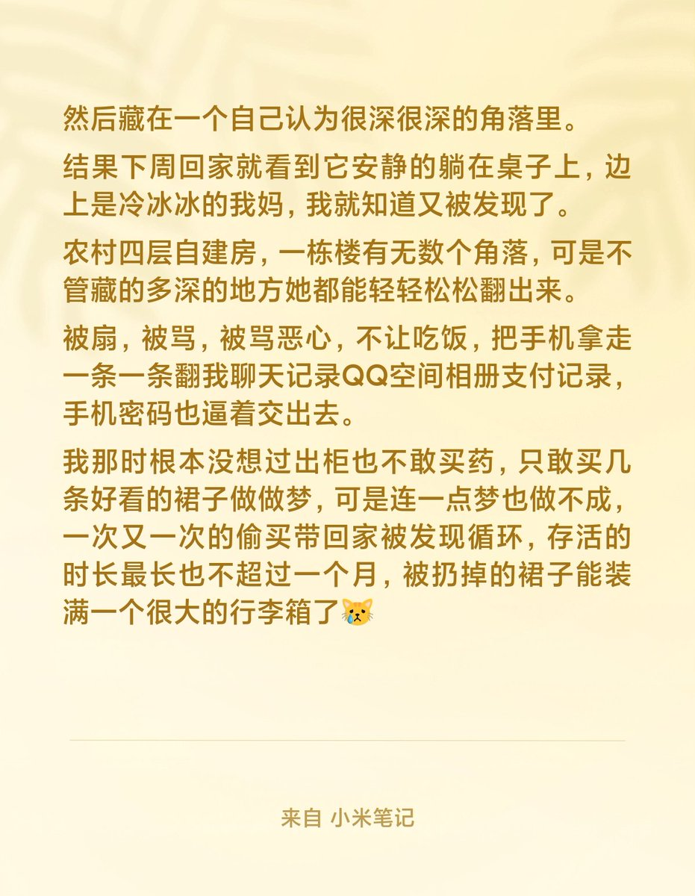

喵喵小风🐱
@Starrynightwglf
看到这些字就难受了...
大学以前几乎没有什么零花钱，我的大部分钱都是攒下来零钱找路边的小店换到微信然后转QQ钱包里的（还有过年要上交的压岁钱里抽出来两张）。
颤抖的点了支付买了喜欢的裙子并删掉付款记录，周末放学偷偷取回家，在只有半天的周末做一场短暂的梦，还要趁我妈下班前脱下来，然后藏

雨池🍥🏳️⚧️
@aizhenxunjiang
看到这个帖子触感好深🥺，我去年也曾经历过，挥之不去的记忆 https://t.co/R98tWuXLaI